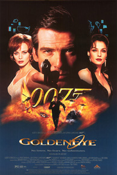
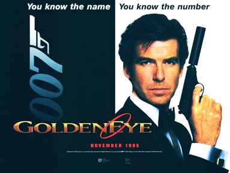
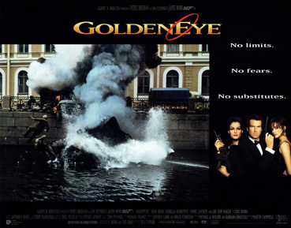
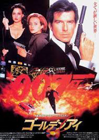
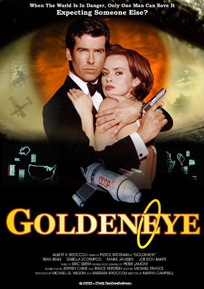
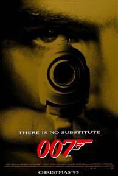
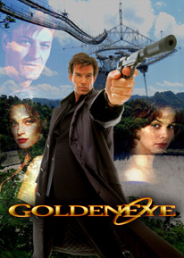
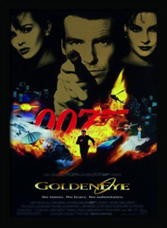
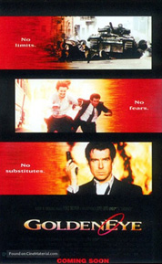
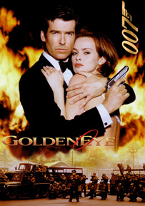

Barbara Broccoli
Jeffrey Caine
Bruce Feirstein
Michael France (uncredited)
Kevin Wade (uncredited)
United Artists
United International Pictures (International)
"GoldenEye" (Bono and the Edge)
In 1986, at Arkhangelsk, MI6 agents James Bond and Alec Trevelyan infiltrate a Soviet chemical weapons facility and plant explosives. Trevelyan is captured and executed by Colonel Arkady Grigorovich Ourumov, but Bond flees as the facility explodes.
Nine years later, in Monte Carlo, Bond follows Xenia Onatopp, a member of the Janus crime syndicate, who has formed a suspicious relationship with Charles Farrel, a Canadian Navy admiral. As Onatopp crushes the admiral to death with her thighs during sex, his credentials are stolen by Ourumov, who uses them to board a French Navy destroyer with Onatopp to steal a Eurocopter Tiger helicopter. Ourumov and Onatopp later fly the helicopter to a bunker in Severnaya, Siberia, where they massacre the staff and steal the control disk for the GoldenEye satellites, two Soviet electromagnetic pulse weapon satellites from the Cold War. They program the first GoldenEye (Petya) to destroy the complex and disable incoming Russian Air Force fighters (while the stolen Tiger survives), and escape with programmer Boris Grishenko. Natalya Simonova, the lone survivor, contacts Boris and arranges to meet him in Saint Petersburg, where he betrays her to Janus.
In London, M assigns Bond to investigate the attack. He flies to Saint Petersburg to meet CIA operative Jack Wade, who suggests that Bond meet with Valentin Zukovsky, a former KGB agent and business rival of Janus. Zukovsky arranges a meeting between Bond and Janus. Onatopp surprises Bond at the Grand Hotel Europe and attempts to kill him, but he overpowers her. She takes Bond to Janus, who reveals himself as Trevelyan; he faked his death at Arkhangelsk but was badly scarred by the explosion. A descendant of the Cossack clans who collaborated with the Nazi forces in the Second World War, Trevelyan had vowed revenge against the British after they betrayed the Cossacks, which drove his father to kill Trevelyan's mother and himself. Just as Bond is about to shoot Trevelyan, Bond is shot with a tranquilizer dart.
Bond awakens, tied up with Natalya in the helicopter, which has been programmed to self-destruct. They escape but are captured and transported to the Russian military archives, where Minister of Defence Dimitri Mishkin interrogates them. Just as Natalya reveals the existence of a second satellite and Ourumov's involvement in the Siberian massacre, Ourumov arrives and kills Mishkin. Intending to frame Bond for the murder, he calls the guards, but Bond and Natalya escape. In the ensuing firefight, Natalya is captured. Bond steals a tank and pursues Ourumov through St. Petersburg to Trevelyan's train, where he kills Ourumov. Trevelyan escapes and locks Bond in the train with Natalya, setting it to self-destruct. As Bond cuts through the floor with his laser watch, Natalya triangulates Grishenko's satellite dish to Cuba. The two escape just before the train explodes.
Bond and Natalya meet Wade in the Florida Keys and borrow his plane for the trip to Cuba, where the same night, they make love. The next day, while searching for GoldenEye's satellite dish, they are shot down. Onatopp rappels down from a helicopter and attacks Bond. After a fight ensues, Bond shoots down the helicopter, which snares Onatopp and crushes her to death against a tree. Bond and Natalya watch water draining out of a lake, uncovering the satellite dish. They infiltrate the control station, and Bond is captured. Trevelyan reveals his plan to rob the Bank of England before erasing all of its financial records with the second GoldenEye (Misha), concealing the theft and destroying Britain's economy.
Natalya programs the satellite to initiate atmospheric re-entry and destroy itself. As Trevelyan captures Natalya and orders Grishenko to save the satellite, Grishenko unwittingly triggers an explosion with Bond's pen grenade (received earlier from Q), which allows Bond to escape to the antenna cradle. Bond sabotages the antenna, preventing Grishenko from regaining control of the satellite. Bond and Trevelyan fight on the antenna's suspended platform, which finishes with Bond holding a dangling Trevelyan by his foot. Bond releases Trevelyan, who plummets into the dish. Seconds later the cradle explodes, killing Trevelyan and Grishenko. Natalya commandeers a helicopter and rescues Bond. It drops them in a field, where the couple are rescued by Wade and a team of Marines.
Following the release of Licence to Kill in July 1989, pre-production work for the seventeenth film in the James Bond series, the third to star Timothy Dalton (fulfilling his three-film contract), began in May 1990. A poster for the then-upcoming movie was even featured on the Carlton Hotel during the 1990 Cannes Film Festival. In August, The Sunday Times reported that producer Albert R. Broccoli had parted company with writer Richard Maibaum, who had worked on the scripts of all but three Bond films so far, and director John Glen, responsible for the previous five instalments of the series. Broccoli listed among the possible directors John Landis, Ted Kotcheff, and John Byrum. Broccoli's stepson Michael G. Wilson contributed a script, and Wiseguy co-producer Alfonse Ruggiero Jr. was hired to rewrite. Production was set to start in 1990 in Hong Kong for a release in late 1991.
Dalton would declare in a 2010 interview that the script was ready and "we were talking directors" before the project entered development hell caused by legal problems between Metro-Goldwyn-Mayer, parent company of the series' distributor United Artists, and Broccoli's Danjaq, owners of the Bond film rights. In 1990, MGM/UA was purchased by French-Italian broadcasting group Qintex, owner of the French production company Pathé, and merged with Pathé Communications Group to create MGM-Pathé Communications. Pathé CEO Giancarlo Parretti intended to sell off the distribution rights of the studio's catalogue so he could collect advance payments to finance the buyout. This included international broadcasting rights to the 007 library at cut-rate prices, leading Danjaq to sue, alleging the licensing violated the Bond distribution agreements the company made with United Artists in 1962, while negating Danjaq a share of the profits. The lawsuits were only settled in 1992, while Dalton's original contract with Danjaq expired in 1993.
In May 1993, MGM announced that the seventeenth James Bond film was back in the works, to be based on a screenplay by Michael France. With Broccoli's health deteriorating (he died seven months after the release of GoldenEye), his daughter Barbara Broccoli described him as taking "a bit of a back seat" in film's production. Barbara and Michael G. Wilson took the lead roles in production while Albert Broccoli oversaw the production of GoldenEye as a consulting producer, credited as "presenter".
In an interview in 1993, Dalton said that Michael France was writing the screenplay, due to be completed in January or February 1994. Despite France's screenplay being completed by that January, in April 1994 Dalton officially resigned from the role.
After Michael France delivered the original screenplay, Jeffrey Caine was brought in to rewrite it. Caine kept many of France's ideas but added the prologue prior to the credits. Kevin Wade polished the script and Bruce Feirstein added the finishing touches. In the film, the writing credit was shared by Caine and Feirstein, while France was credited with only the story, an arrangement he felt was unfair, particularly as he believed the additions made were not an improvement on his original version. Wade did not receive an official credit, but was acknowledged in the naming of Jack Wade, the CIA character he created.
To replace Dalton, the producers cast Irish actor Pierce Brosnan, who had been prevented from succeeding Roger Moore in 1986 because of his contract to star in the Remington Steele television series. Before negotiating with Brosnan, Mel Gibson, Hugh Grant and Liam Neeson passed on the role. Paul McGann was the studio's original choice for the role. He would have been cast as Bond only if Brosnan had turned down the role. Brosnan was paid $1.2 million for the film, out of a total budget of $60 million. Judi Dench, an English actress, was cast as M replacing Robert Brown, making GoldenEye the first film of the series featuring a female M. The decision is widely believed to be inspired by Stella Rimington becoming head of MI5 in 1992. John Woo was approached as the director, and turned down the opportunity, but said he was honoured by the offer. The producers then chose New Zealander Martin Campbell as the director. Brosnan later described Campbell as "warrior-like in his take on the piece" and that "there was a huge passion there on both our parts".
While the story was not based on a work by Ian Fleming, the title GoldenEye traces its origins to the name of Fleming's Jamaican estate where he wrote the Bond novels. Fleming gave a number of origins for the name of his estate, including Carson McCullers' Reflections in a Golden Eye and Operation Goldeneye, a contingency plan Fleming himself developed during World War II in case of a Nazi invasion through Spain.
Although only six years since the release of Licence to Kill, world politics had changed dramatically in the interim. GoldenEye was the first James Bond film to be produced since the fall of the Berlin Wall, the collapse of the Soviet Union, and the end of the Cold War, and therefore it was doubtful whether the character was still relevant in the modern world. Some in the film industry felt it would be "futile" for the Bond series to make a comeback, and that it was best left as "an icon of the past". The producers even thought of new concepts for the series, such as a period piece set in the 1960s, a female 007, or a Black James Bond. Ultimately, they chose to return to the basics of the series, not following the sensitive and caring Bond of the Dalton films or the political correctness that started to permeate the decade. However, when released, the film was considered a successful revitalisation, and it effectively adapted the series for the 1990s. One of GoldenEye's innovations was the casting of a female M. In the film, the new M quickly establishes her authority, remarking that Bond is a "sexist, misogynist dinosaur" and a "relic of the Cold War". This is an early indication that Bond is portrayed as far less tempestuous than Timothy Dalton's Bond from 1989.
Principal photography for the film began on 16 January 1995 and continued until 2 June. The producers were unable to film at Pinewood Studios, the usual location for Bond films, because it had been reserved for First Knight. Instead, an old Rolls-Royce factory at Leavesden Aerodrome in Hertfordshire was converted into a new studio, dubbed Leavesden Studios. This process is shown on the 2006 DVD's special features.
The bungee jump was filmed at the Contra Dam (also known as the Verzasca or Locarno Dam) in Ticino, Switzerland. The film's casino scenes and the Tiger helicopter's demonstration were shot in Monte Carlo. Reference footage for the tank chase was shot on location in St. Petersburg and matched to the studio at Leavesden. The climactic scenes on the satellite dish were shot at Arecibo Observatory in Puerto Rico. The actual MI6 headquarters were used for external views of M's office. Some of the scenes in St. Petersburg were actually shot in London – the Epsom Downs Racecourse doubled as the airport – to reduce expenses and security concerns, as the second unit sent to Russia required bodyguards.
The French Navy provided full use of the frigate FS La Fayette and their newest helicopter, the Eurocopter Tiger to the film's production team. The French government also allowed the use of Navy logos as part of the promotional campaign for the film. However, the producers had a dispute with the French Ministry of Defence over Brosnan's opposition to French nuclear weapons testing and his involvement with Greenpeace; as a result, the French premiere of the film was cancelled.
The sequences involving the armoured train were filmed on the Nene Valley Railway, near Peterborough in the UK. The train was composed of a British Rail Class 20 diesel-electric locomotive and a pair of BR Mk 1 coaches, all three heavily disguised to resemble a Soviet armoured train.
GoldenEye was the last film of special effects supervisor Derek Meddings, to whom the film was dedicated. Meddings' major contribution was miniatures. It was also the first Bond film to use computer generated imagery. Among the model effects are most external shots of Severnaya, the scene where Janus' train crashes into the tank, and the lake which hides the satellite dish, since the producers could not find a round lake in Puerto Rico. The climax in the satellite dish used scenes in Arecibo, a model built by Meddings' team and scenes shot with stuntmen in Britain.
Stunt car coordinator Rémy Julienne described the car chase between the Aston Martin DB5 and the Ferrari F355 as between "a perfectly shaped, old and vulnerable vehicle and a racecar." The stunt had to be meticulously planned as the cars are vastly different. Nails had to be attached to the F355 tyres to make it skid, and during one take of the sliding vehicles, the two cars collided. The largest stunt sequence in the film was the tank chase, which took around six weeks to film, partly on location in St. Petersburg and partly on the old de Havilland runway at Leavesden. A Russian T-54/55 tank, on loan from the East England Military Museum, was modified with the addition of fake explosive reactive armour panels. To avoid destroying the pavement on the city streets of St. Petersburg, the steel off-road tracks of the T-54/55 were replaced with the rubber-shoed tracks from a British Chieftain tank. The T-55 Tank used in the film is now on permanent display at Old Buckenham Airport where the East England Military Museum is based.
For the confrontation between Bond and Trevelyan inside the antenna cradle, director Campbell decided to take inspiration from Bond's fight with Red Grant in From Russia with Love. Pierce Brosnan and Sean Bean did all the stunts themselves, except for one take where one is thrown against the wall. Brosnan injured his hand while filming the extending ladder sequence, making producers delay his scenes and film the ones in Severnaya earlier.
The opening 220 m (720 ft) bungee jump at Arkhangelsk, shot at the Contra Dam in Switzerland and performed by Wayne Michaels, was voted the best movie stunt of all time in a 2002 Sky Movies poll, and set a record for the highest bungee jump off a fixed structure. The ending of the pre-credits sequence with Bond jumping after the aeroplane features Jacques Malnuit riding the motorcycle to the edge and jumping, and B.J. Worth diving after the plane – which was a working aircraft, with Worth adding that part of the difficulty of the stunt was the kerosene striking his face.
The fall of Communism in Russia is the main focus of the opening titles, designed by Daniel Kleinman (who took over from Maurice Binder after his death in 1991). They show the collapse and destruction of several structures associated with the Soviet Union, such as the red star, statues of Communist leaders—notably Joseph Stalin—and the hammer and sickle. In an interview, Kleinman said they were meant to be "a kind of story telling sequence" showing that "what was happening in Communist countries was Communism was falling down". According to producer Michael G. Wilson, some Communist parties protested against "Socialist symbols being destroyed not by governments, but by bikini-clad women", especially certain Indian Communist parties, which threatened to boycott the film.









